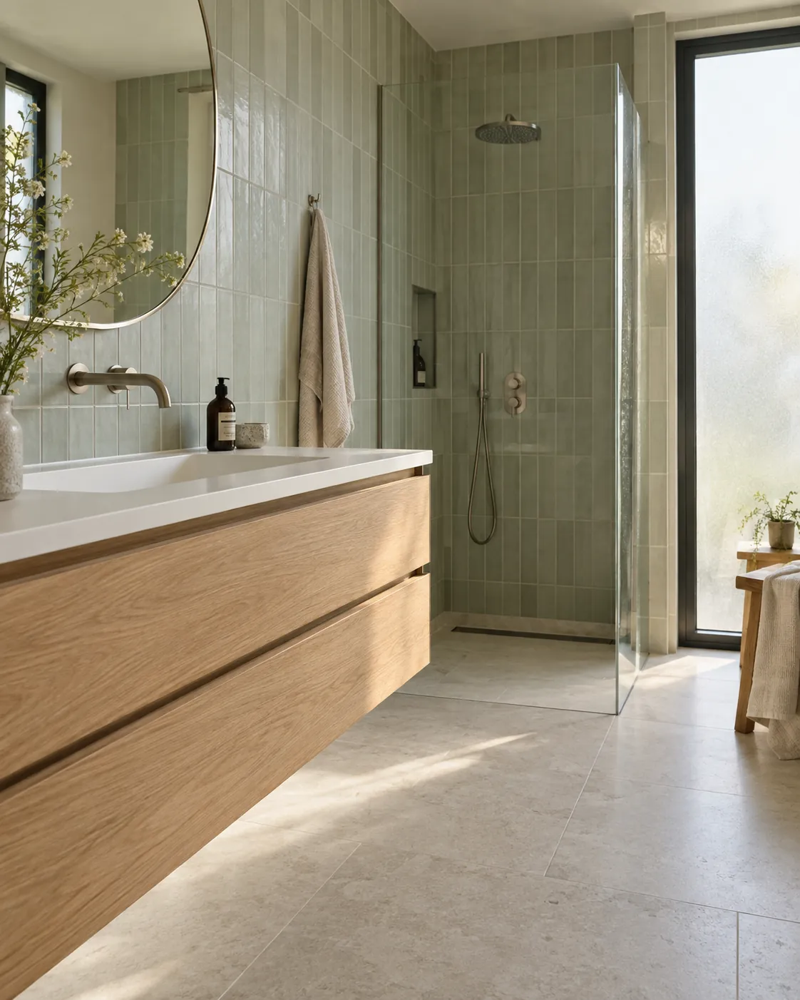
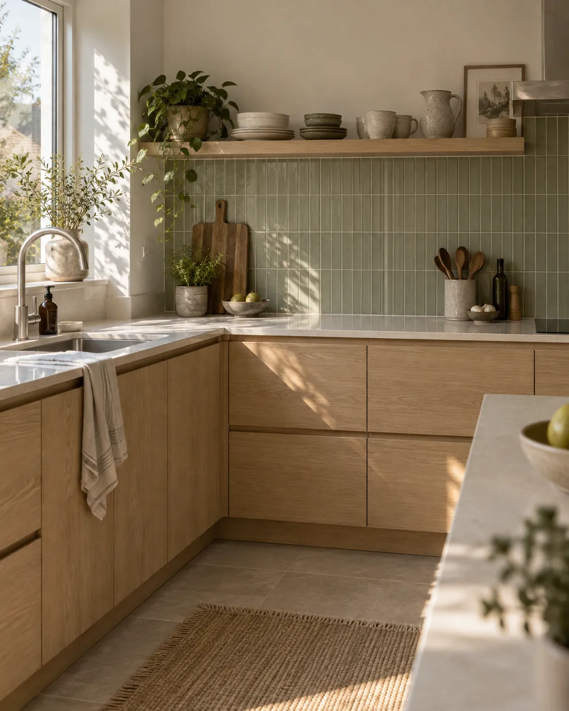

Klussenbedrijf Mint
Eén Mint.
Twee mogelijkheden.
Een verzorgde bedrijfswebsite of een uitgebreidere site met een eigen pagina voor elke dienst? Bekijk wat er in beide varianten zit.

De bedrijfswebsite
Professional
6pagina’s
Voor Mint als vertrouwd adres voor klussen in en om het huis. Bezoekers ontdekken het aanbod, bekijken eerder werk en nemen contact op.
- Zes aparte pagina’sHome, diensten, ons werk, over Luka, ervaringen en contact. Een overzichtelijke plek voor elk onderwerp.
- Het aanbod in één overzichtBadkamer, keuken, afwerking en buitenwerk bij elkaar. Ook kleine klussen krijgen aandacht.
- Echte projectfoto’s en ervaringenBeelden en klantreacties uit de bestaande Mint-site laten bezoekers kennismaken met het werk.
- Persoonlijk contactEen contactformulier met kluskeuze, plus bellen, e-mail en WhatsApp. De bezoeker kiest wat prettig voelt.
- Een eigen mobiele indelingEen uitklapbaar menu en pagina’s die zich aanpassen aan telefoon, tablet en desktop.
Past bij: een bedrijf dat zijn aanbod helder wil presenteren en aanvragen persoonlijk wil bespreken.
Meer ruimte per dienst
Performance
15pagina’s
Ook hier staan het werk, Luka, ervaringen en contact centraal. Daarbovenop krijgt iedere dienst een eigen plek en kunnen bezoekers beginnen bij hun soort klus.
- Acht aparte dienstpagina’sBadkamer, keuken, sanitair, tegelwerk en vloeren, schilderwerk, elektra en reparaties, tuin en bestrating, en dakwerk. Per onderwerp eigen tekst en een ingang naar contact.
- Drie ingangen op de homepageEen ruimte verbouwen, klussen in huis of aan de slag buiten. Bezoekers herkennen hun vraag zonder het hele aanbod te hoeven lezen.
- Een kluswijzer met klikvragenEen extra route voor wie nog twijfelt: begin bij het soort werk en de fase waarin het plan zit.
- Een aparte pagina over de werkwijzeVan eerste bericht tot uitvoering. Bezoekers kunnen vooraf lezen welke stappen bij een klus horen.
- Meer pagina’s om gericht te delenStuur iemand direct naar badkamerwerk of tuinonderhoud. Zo begint een gesprek bij de dienst waar de vraag over gaat.
Past bij: een bedrijf dat verschillende soorten klussen afzonderlijk wil presenteren en bezoekers meer hulp wil geven bij hun eerste keuze.

Waar zit het prijsverschil?
Professional biedt een compleet bedrijfsoverzicht in zes pagina’s. Bij Performance zit het extra werk in negen aanvullende pagina’s, inhoud per dienst en de interactieve kluswijzer. Dat vraagt meer uitwerking, controle en onderhoud.
Beide krijgen dezelfde aandacht voor uitstraling en leesbaarheid. De grotere omvang en extra keuzemogelijkheden bepalen het prijsverschil. De investering per variant volgt in de offerte.
Demo voor Klussenbedrijf Mint. Formulieren versturen nog geen aanvragen. Voor livegang worden de contactafhandeling en definitieve inhoud afgerond.